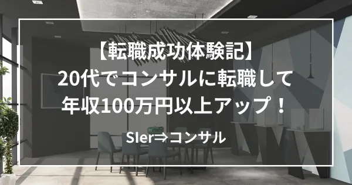

【体験記】SIerからのコンサル転職で年収100万以上アップ！

ステラキャリアズ広報室より、弊社の支援で転職成功された方の体験記をご紹介します。
今回は、SIerからコンサル業界への転職に挑戦された30代のM/Sさん。
現職での業務に限界を感じ始め、「考える仕事」への関心から転職を決意。知人の紹介でステラキャリアズを利用し、初回面談から「候補者目線」の丁寧なサポートを受けたことをきっかけに、手ごたえを感じると、面接対策では自己理解を深める支援が功を奏し、第一志望からの内定を獲得。
未経験からのキャリアチェンジを目指す方、ぜひご覧ください↓↓↓
ステラキャリアズとの出会い
社会人3年目になったあたりから、現職（SIer）からコンサルへの転職を漠然と考え始めました。エンジニアとしての経験を積む中で、次は「より企画や戦略といった"上流工程"に携わりたい」と考えるようになりました。そんな時期に、知人からステラキャリアズを紹介してもらい、最初のカジュアル面談で村木さんに担当していただきました。初対面のときから候補者目線で接してくださり、「この方と一緒に転職活動を頑張っていきたい」と感じ、ステラキャリアズにお世話になることを決めました。
徹底的に候補者に寄り添う姿勢
今回、私は第一志望としていた企業から内定をいただくことができました。ここまでたどり着けたのは、村木さんの「徹底的に候補者に寄り添う姿勢」があってこそだと思っています。転職の方向性を決める段階では、転職で大切にしたい軸や将来的なキャリアなど、私の考えについて丁寧にヒアリングしてくださったうえで、私に合う企業を推薦してくださいました。面接対策では、話し方のアドバイスはもちろん、私らしさを引き出すための深掘りもしていただきました。最初のうちは「正しく答えなきゃ」「良く見せなきゃ」と取り繕ってしまう自分がいましたが、等身大の私に寄り添ってアドバイスを続けてくださる村木さんのおかげで、自分の言葉で語ることの大切さに気づくことができました。
手厚いサポート体制
サポート体制も非常に手厚いものでした。私からの相談のメッセージには、いつも即レスでご対応くださり、何でも相談しやすかったです。面接の時期に体調を崩してしまったこともありましたが、今できる範囲で無理なく進められるようスケジュールを調整してくださり、とても安心できました。また、転職に関する情報量も豊富で、企業ごとの面接傾向はもちろん、村木さんご自身のノウハウもたくさん教えていただきました。さらに、第一志望であった企業の面接前には、数日間にわたって毎日1時間の模擬面接を実施してくださり、毎回丁寧なフィードバックをいただけました。この期間があったからこそ、内定につながったと実感しています。
自分と向き合えた転職活動
転職活動は、就職活動と違って自分のペースで進められる点がメリットである一方、自律が求められるという難しさもあると感じてました。そんな中で、ステラキャリアズの伴走の仕方は、私にとってちょうど良い距離感とリズムでした。転職を通して、ここまで自分自身と向き合い、深く考える時間を持てたことは、人生という単位で見ても大きな価値だったと感じています。
最後に
この転職活動は、私にとって大切な時間になりました。ここまで伴走していただけた担当の村木さんには、心から感謝しています！いただいたご恩を忘れず、新しい職場でも自分らしく、しっかりと努力を続けていきたいと思います。
Go back to Insight